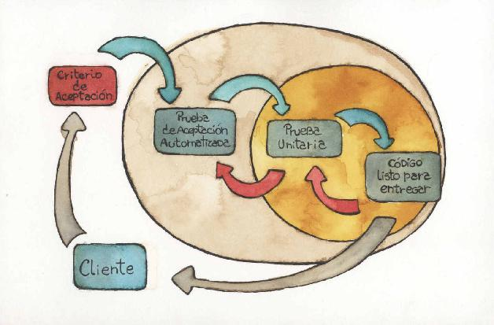

Empezando por la aceptación
Ya es viernes por la tarde y todo el equipo está muy cansado. Alejandro, que está probando la aplicación con el cliente, le dice a Marcio, desarrollador líder:
—Estuve probando incluir en la factura un ítem con precio unitario negativo, pero por algún motivo, no logro que funcione.
Marcio, satisfecho, contesta:
—Es que, precisamente, no tiene sentido que un artículo tenga precio negativo. Hasta incluí pruebas unitarias que validan que ningún precio unitario fuese negativo. ¿No es genial?
Sin embargo, Alejandro no está de acuerdo:
—Mm...Lamento tener que contradecirte, pero mientras definíamos los requerimientos surgió esta duda y Diego, el analista, me dijo que podía haber ítems con precios negativos. Es decir, ningún producto puede tener precio negativo, pero hay ítems que corresponden a descuentos, cuyos precios sí pueden ser negativos.
Marcio no termina de entender por qué a él no se le ocurrió esa posibilidad y pide reunirse con Diego lo antes posible.
La reunión con Diego no hace más que confirmar lo que decía Alejandro: hay ítems, que no son productos, que tienen precios unitarios negativos. Incluso Diego les informa que ninguna factura puede tener un total negativo, cosa que ni Marcio ni Alejandro habían previsto en su diseño. Como conclusión, Diego decide comunicar al cliente que la entrega de esta semana no va a incluir los ítems con precio negativo y Marcio queda encargado de agregar estos dos temas a la lista de tareas a realizar en la semana siguiente. Por suerte es viernes; el lunes, con la mente despejada, podrán seguir trabajando.
En un proyecto tradicional suele haber roles, tales como clientes, especialistas de negocio, analistas funcionales, programadores, testers, entre otros.
Estos roles, que no son los únicos posibles, y que suelen adquirir nombres distintos según la metodología o la costumbre, tienen asignadas determinadas responsabilidades. Por ejemplo, el analista de negocio suele ser el único interlocutor con el cliente, que trabaja entendiendo sus necesidades y construyendo especificaciones de los requerimientos que primero valida con el cliente y que luego serán usadas por programadores y testers. Los programadores toman dichas especificaciones y construyen el producto (código, base de datos y demás) basándose en los mismos. Los testers parten también de los requerimientos elaborados por el analista de negocio, toman el producto tal como está construido por los programadores y verifican que se haya construido siguiendo aquellos requerimientos. Finalmente, en algún momento, el producto llega al cliente. Como este validó los requerimientos con el analista, el producto se construyó de acuerdo a estos y los testers verificaron el producto, el cliente debería estar conforme con lo que recibe.
Sin embargo, las pruebas que realizamos para comprobar la satisfacción del cliente luego del desarrollo, muestran a menudo una disconformidad con el producto recibido. En este capítulo vamos a ver qué proponen los métodos ágiles para resolver este problema.
Necesidad de criterios de aceptación
Una clave para mejorar los resultados es definir criterios de aceptación. Estos criterios son un conjunto de condiciones que nos deberían servir para definir, con la mayor claridad posible, los requerimientos justo antes de comenzar a desarrollarlos.
Si tuviésemos criterios de aceptación claramente definidos, y trabajados en conjunto entre el equipo de desarrollo y el cliente, las probabilidades de que este último no quede conforme al finalizar son mucho menores. Y todos ganaríamos confianza: el cliente en el equipo de desarrollo, y el equipo de desarrollo en el cliente.
Si, terminada una iteración, los criterios de aceptación de los requerimientos que se hayan encarado no son satisfechos por el producto, está claro que el cliente no va a estar conforme con lo que le entreguemos. Por lo tanto, conocer a priori los criterios de aceptación es una necesidad para todos los miembros del equipo de desarrollo, que pueden verificar lo que hacen contra esos criterios.
Si, en cambio, el producto satisface los criterios de aceptación, pero el cliente no está conforme, algo está mal en el proceso y eso es responsabilidad de todos los involucrados, tanto el cliente como el equipo. Por supuesto que esta realidad no es para ponernos contentos ya que se supone que el cliente debe estar satisfecho con lo que recibe. Estas situaciones deberían preocupar a todos los involucrados y ser tomadas como tema prioritario de la siguiente retrospectiva28. En un proceso iterativo, esto no debería ocurrir en varias iteraciones seguidas, ya que se supone que mediante las retrospectivas vamos aprendiendo a no cometer los mismos errores.
Pero eso no es todo. Los criterios de aceptación definidos con rigurosidad sirven para evitar que trabajemos para desarrollar funcionalidades que el cliente no esperaba. El famoso gold plating29, que se deriva de desarrollar más de lo que el cliente espera, no va a ocurrir, pues las funcionalidades superfluas no contarían con criterios de aceptación que las validen.
Por lo tanto, los criterios de aceptación sirven a los programadores para saber cuándo han completado el desarrollo de una funcionalidad.
La clásica pregunta “¿Cuándo sé que terminé mi trabajo con este requerimiento concreto?” se responde fácilmente: “cuando se satisfagan todos sus criterios de aceptación”.
Antes de seguir adelante, hagamos una aclaración. Cuando hablamos de criterios de aceptación para los requerimientos, no nos estamos restringiendo a los requerimientos funcionales. Los requerimientos de seguridad, de tiempo de respuesta, de escalabilidad, o cualquier otro no funcional o atributo de calidad, también necesitan criterios de aceptación claros que nos indiquen cómo se va a evaluar el producto una vez entregado. Tal vez incluso sean más importantes en estos casos que en los de requerimientos funcionales.
Por supuesto, los criterios de aceptación se pueden usar para elaborar indicadores de avance de un proyecto. Toda funcionalidad que satisfaga sus criterios de aceptación puede darse por concluida, con lo que la suma de requerimientos que cumplen con los criterios de aceptación nos brinda una medida clara del avance del proyecto y del valor entregado al cliente.
Como corolario:
Ningún requerimiento, funcional o de los otros, debería existir sin sus criterios de aceptación que permitan que el equipo sepa con qué se va a medir la corrección de aquello en lo que se está trabajando.
En otras palabras:
No deberían desarrollarse funcionalidades que no estén acompañadas por una prueba de aceptación. Y si durante una prueba, o en producción, surgiera un problema, habría que analizar que pasó con la prueba de aceptación correspondiente antes de resolverlo.
Los criterios de aceptación se especifican mediante pruebas
La forma más natural de especificar criterios de aceptación es mediante pruebas. Al fin y al cabo, si un criterio de aceptación es aquello que sirve para determinar si el producto cumple o no con las expectativas del cliente, ¿no es muy parecido a lo que debería ser una prueba?
En efecto, un caso de prueba de aceptación, bien entendido, es un criterio de aceptación escrito de manera tal que un tester pueda ejecutarlo y ver si el producto cumple los requerimientos. Y un requerimiento, según lo que definimos más arriba, es un artefacto que debe venir acompañado de los criterios de aceptación que definan lo que el cliente espera del sistema.
Por lo tanto, una buena manera de elaborar un criterio de aceptación es darle el formato de un caso de prueba. Solo que este caso de prueba no se construye por y para los testers, sino que le sirve también a los programadores para guiar el desarrollo, medir avance y saber cuando terminaron, y al cliente para validar la entrega.
Como corolario, hemos llegado a una nueva definición de lo que es un caso de prueba de aceptación:
Un caso de prueba de aceptación es un escenario de ejecución del sistema con ciertos datos que permite definir si se cumplen o no los criterios de aceptación definidos por el cliente.
Un ejemplo de criterio de aceptación para una story de extracción de dinero podría ser si el usuario ingresa el monto 250 cuando su saldo es 100, el sistema debe rechazar la operación.
Las pruebas de usuario son ejemplos de uso
Por otro lado, los casos de prueba suelen ser escritos para probar el comportamiento del sistema ante determinadas condiciones que el tester considera que deben ser probadas: el uso normal, tanto con valores típicos como con casos límite, entradas erróneas por parte de usuarios, fallas diversas, comportamiento en casos atípicos, entre otras. Pero, en cualquier caso, no son otra cosa que ejemplos de uso del sistema, teniendo en cuenta esas condiciones normales o excepcionales.
Lo que se busca al ejecutar pruebas es determinar si el sistema responde de acuerdo a lo esperado. En los casos de uso normal del sistema, se probará si responde a lo que se espera de él. Y en los demás casos también: si el manejo de errores es correcto, si se recupera correctamente luego de un fallo. Incluso puede que haya situaciones en las cuales se haya aceptado que el sistema no va a responder satisfactoriamente. Esos escenarios también deberían cubrirse por los casos de prueba.
Como se puede ver, estamos dando vueltas en círculos: planteamos que los requerimientos necesitan criterios de aceptación, que estos se expresan más claramente con casos de prueba, que estos son ejemplos de uso del sistema, y esos ejemplos surgen de los requerimientos.
Pero ese recorrido circular dista mucho de ser un problema.
En definitiva, necesitamos ejemplos de uso del sistema
Todo lo anterior nos dice que si construimos ejemplos de uso del sistema mientras elaboramos nuestros requerimientos, van a servir para los desarrolladores, porque les darán una idea clara de lo que se espera del requerimiento, cuales son sus límites, y cuando pueden saber que su trabajo está terminado. Esos mismos ejemplos podrían servir como casos de prueba para verificar la calidad de lo que se va a entregar. Para el propio cliente, esos ejemplos le pueden servir para ver si se comporta como él esperaba. Y para los analistas de negocio, son materializaciones prácticas de las reglas de negocio.
Esto último también es importante para lo que venimos diciendo. Un analista de negocio suele elaborar sus requerimientos en base a distintas técnicas, pero en la generalidad de los casos llevan a especificaciones abstractas, del estilo: “el usuario debe poder hacer envíos de dinero a través del sistema desde y hacia países de América y Europa”. En general, estas especificaciones de requerimientos se acompañan de una gran cantidad de aclaraciones, en la forma de excepciones, prototipos de pantalla, flujos de actividades y reglas de negocio. Las reglas de negocio también suelen quedar expresadas en forma asertiva como, por ejemplo, “los envíos de dinero sólo se podrán realizar en dólares estadounidenses, euros o monedas de países de la Unasur”.
El problema con estas especificaciones de requerimientos y reglas de negocio del sistema, es que no permiten ver con claridad que ocurre en casos límite: que debe hacer el sistema si el usuario intenta usar una moneda distinta o si el usuario desea seleccionar un país fuera de los permitidos, entre muchas otras posibilidades. Algunas de estas situaciones puede que sean informadas proactivamente por el cliente, o incluso que las prevea un analista de negocio sagaz y pregunte a aquel, y en ambos casos serán registradas como parte de los requerimientos o de las reglas de negocio. Pero suelen ser muchos los casos que se pasan por alto, y que recién se plantean cuando el tester se dispone a escribir casos de prueba, o incluso cuando tiene la aplicación a probar ya construida.
El inconveniente más serio de esta omisión es que se advierte luego de la construcción, cuando seguramente el programador ya tomó decisiones basadas en su mejor manera de entender los requerimientos, que puede o no coincidir con las expectativas del cliente.
Hay quienes argumentan en favor de las especificaciones abstractas por sobre los ejemplos concretos. Sin embargo, estos últimos, precisamente por ser concretos, son más fáciles de comprender y acordar con los analistas de negocio y otros interesados, que entienden mejor los ejemplos concretos.
Al fin y al cabo, habitualmente un analista de negocio escribe especificaciones, que le sirven a los desarrolladores y a los testers. Los desarrolladores construyen su código y definen pruebas unitarias, para las cuales deben basarse en ejemplos de entradas y salidas. Los testers, por su lado, desarrollan casos de prueba, que contienen a su vez ejemplos. En algunas ocasiones, para fijar las especificaciones, los desarrolladores y los testers le solicitan a los analistas que les den ejemplos concretos para aclarar ideas. E incluso hay circunstancias en que los propios analistas proveen escenarios que no son otra cosa que requerimientos instanciados con ejemplos concretos.
En definitiva, hay varias ocasiones en que se plantean ejemplos que sirven como complementos de requerimientos. Por eso no es raro que se haya pensado en especificar directamente con ejemplos, o al menos acompañando los requerimientos con ellos.
Estos requerimientos con ejemplos tienen ciertas ventajas, de las cuales las más importantes son:
• Sirven como herramienta de comunicación.
• Se expresan por extensión, en vez de con largas descripciones y reglas en prosa, propensas a interpretaciones diversas.
• Al ser más concretos, son más sencillos de acordar con los clientes.
• Fomentan que los ejemplos que se usen sean los mismos para las distintas actividades, evitando que cada vez se escriban unos distintos, con su potencial divergencia.
• Sirven como pruebas de aceptación.
• Clarifican los criterios de aceptación.
• Facilitan la detección de errores mientras el contexto está fresco en la mente de los participantes.
Algunas limitaciones
Sin embargo, no hay que olvidar que los requerimientos tradicionales tienen un nivel de abstracción mayor y expresan cuestiones que no siempre nos acordamos de llevar a los ejemplos. Por lo tanto, así como antes dijimos que todo requerimiento debe ir acompañado de pruebas de aceptación, también debemos poner el foco en que los escenarios o pruebas de aceptación deben estar claramente asociados a un requerimiento.
Además, no todo requerimiento puede llevarse a ejemplos. Por ejemplo, si una aplicación debe generar números al azar, los ejemplos que podamos escribir no van a servir como pruebas de aceptación.
Otra limitación de esta práctica se da en las situaciones en que la interacción es un requerimiento más importante que el comportamiento, como ocurre con las pruebas de usabilidad. Ya volveremos sobre esto.
Finalmente, nunca vamos a poder decir si el requerimiento quedó especificado en forma completa si solo definimos requerimientos con ejemplos, aunque sí vamos a poder garantizar que no sea ambiguo, validable contra las expectativas del cliente y verificable contra el producto.
Pero sigamos adelante para ver como se construyen estos ejemplos.
Una manera distinta de trabajar
Lo que necesitamos, en definitiva, es tener ejemplos desde el comienzo. Para ello, lo ideal es mantener reuniones del equipo de desarrollo (incluyendo todos los roles del mismo: cliente, analistas, testers, programadores) que permitan construir esos ejemplos.
Conviene que estas reuniones sean en modalidad de taller30. La idea es ponerse de acuerdo en un lenguaje, una jerga, debatir y construir ejemplos en conjunto con el cliente, que luego sirvan para todo el equipo.
Aquí deben surgir los casos límite y las excepciones, y el equipo de desarrollo, incluyendo los que vayan a trabajar en testing, debe salir con todas sus preguntas respondidas o, al menos, con promesa de respuesta en el corto plazo.
El propio formato de taller hace que haya una revisión implícita, que surjan más requerimientos y reglas, y que se los tenga más presentes que cuando hay que leerlos de un documento escrito (esto independientemente de que luego se trasladen a un documento escrito).
Esas reuniones del cliente y el equipo de trabajo pueden tener distintas periodicidades, según las circunstancias del proyecto. Si podemos tener al cliente o un representante del mismo en contacto permanente con el equipo (que, como veremos en el capítulo “Reuniendo al equipo”, es lo más conveniente), las reuniones se podrán hacer al comenzar a trabajar en cada funcionalidad. Si el cliente solo puede mantener una presencia limitada o esporádica, habrá que agendar reuniones periódicas, tipo talleres, idealmente como mínimo al comenzar cada iteración. Si el cliente no está en el lugar, por ser un cliente remoto, vamos a necesitar hacer reuniones por videoconferencia o teleconferencia, cuanto más visuales mejor.
Lo que no puede ocurrir es que el cliente no esté presente siquiera en forma remota. Sin un cliente definiendo criterios de aceptación no hay criterios de aceptación, porque para poder construirlos de manera genuina se necesita de él, conocer sus opiniones y poder preguntar cara a cara. En este caso, como en tantos otros, la presencia del cliente es la clave del éxito.
No podemos dejar de recalcar que la comunicación cara a cara es fundamental en estas reuniones. Como veremos más adelante, las reuniones presenciales son una de las grandes recomendaciones del desarrollo ágil. En este caso, su importancia radica en que en situaciones en las que se está definiendo nada menos que lo que hay que hacer, los criterios de éxito y lo que no hay que hacer, la riqueza que da el lenguaje corporal no es reemplazable por otras formas de comunicación [Cockburn 2001].
Por eso, para evitar el síndrome del teléfono descompuesto31, se deben preferir siempre las reuniones cara a cara. Si no fuera posible, se pueden hacer talleres por videoconferencia, que es el mejor sucedáneo, sin la ventaja de la presencia real. Si esta modalidad también es imposible, la reunión telefónica podría servir, aunque estaremos perdiendo toda la información que brinda el lenguaje gestual y corporal. Finalmente, está el recurso de recurrir a la escritura, mediante mensajería instantánea o correo electrónico, que son desde todo punto de vista las peores alternativas, porque ni siquiera permiten dilucidar los tonos de voz32.
El diseño también se puede especificar con pruebas
Venimos hablando de construir criterios de aceptación de los requerimientos, con formato de ejemplos, que luego sirvan como casos de prueba del producto.
Sin embargo, no estamos teniendo en cuenta en todo esto al diseño, que también admite un tratamiento similar.
Una vez definidos los criterios de aceptación de un requerimiento, en forma de pruebas, se pueden escribir pruebas de mayor granularidad que, cumpliendo con estos criterios, sirvan como una medida de la calidad de su diseño e implementación.
Esta tarea la puede hacer un conjunto de programadores, un par de ellos, o simplemente un programador aislado antes de comenzar a desarrollar una funcionalidad.
Hace ya más de una década que surgió una práctica de diseño de software orientado a objetos, llamada TDD (Test-Driven Development33), que se basa en derivar el código de pruebas escritas antes del mismo. Fue presentada como parte de Extreme Programming (XP) por Kent Beck [Beck 1999].
Se ha utilizado para poner el énfasis en hacer pequeñas pruebas de unidad que garanticen la cohesión de las clases, así como en pruebas de integración (de escenarios con varias clases) que aseguren la calidad del diseño y la separación de incumbencias, disminuyendo el acoplamiento. Dicho sea de paso, TDD recomienda que las pruebas sean especificadas en código, pero este tema lo analizaremos en el capítulo “Probar, probar, probar”.
Hay una regla de oro de TDD que conviene destacar: “Nunca escribas nueva funcionalidad sin una prueba que falle antes” [Beck 2002]. Otra dice: “Si no puedes escribir una prueba para lo que estás por codificar, entonces no deberías estar pensando en codificar” [Chaplin 2001]. El corolario obvio es que ninguna funcionalidad futura debería escribirse por adelantado, si no tiene el conjunto de pruebas que permita verificar su corrección. Si a eso se le suma que solo se debería escribir de a una prueba por vez, tenemos un desarrollo incremental extremo, definido por pequeños incrementos que se corresponden con funcionalidades bien acotadas.
Notemos que estamos hablando de una práctica de diseño, no de control de calidad (o al menos no principalmente), ya que al escribir las pruebas antes del propio código productivo estamos derivando código a partir de las mismas. En definitiva, las pruebas explicitan el diseño del sistema.
Esto ha llevado a algunos equívocos que provienen del propio nombre de TDD, que incluye la palabra “test”. En efecto, mientras por un lado se afirma que es una técnica de diseño y no de pruebas, por el otro, el nombre invita a pensar otra cosa. Incluso las herramientas que fueron surgiendo a partir de TDD, desarrolladas incluso por los mentores de la práctica, requerían que el código de pruebas tuviese métodos cuyos nombres empezasen con test y las clases fueran descendientes de algo como TestCase34. Nadie niega que TDD genera un buen conjunto de pruebas de regresión, pero ese no pretende ser su objetivo principal, sino más bien un efecto lateral positivo. Para colmo, es una práctica centrada en la programación, con lo cual no parece enfocada en especialistas del negocio ni testers; de hecho, los testers tradicionales tienden a desconfiar de ella por este mismo motivo.
Un poco al pasar, dijimos que en los talleres de discusión de requerimientos con los clientes podía ir surgiendo el vocabulario del proyecto. Esto también es una cuestión que hace al diseño. Eric Evans [Evans 2003], al presentar su práctica de Domain Driven Design35, asignó importancia fundamental a lo ubicuo del lenguaje, poniendo énfasis en que los nombres de las clases y métodos36 de un sistema deberían surgir de los conceptos del dominio.
Efectivamente, el uso de un vocabulario común entre personas que cubren distintos roles y en actividades distintas es una ventaja que debería llegar hasta los nombres en el código.
El mundo al revés
Como estamos viendo, en el desarrollo ágil, empezamos creando criterios de aceptación como pruebas de mayor nivel. Luego, escribimos pruebas técnicas que nos permitan definir el diseño, incluyendo los nombres que vamos a usar, tanto en la comunicación con el equipo y el cliente, como en el código. Y, por último, construimos el código que responda a ambos tipos de pruebas. El diagrama de la figura 6.1 muestra este proceso.
Figura 6.1 Ciclo de desarrollo basado en pruebas.

Puede que a las personas que trabajan con procesos tradicionales les parezca descabellado escribir pruebas antes de construir el software que esas pruebas van a verificar. Creemos que lo explicado en este capítulo debería bastar para contar con buenas razones para hacerlo. Como veremos enseguida, estas ideas llevan ya bastante tiempo dando vuelta en el desarrollo de software, y se les ha dado nombres diversos.
Además, hay una ventaja adicional en escribir las pruebas basándonos en requerimientos o en cuestiones de diseño, antes de programar una sola línea de lo que las pruebas deberían verificar. Es una aspiración casi tan vieja como el desarrollo de software: al escribir las pruebas antes, estamos especificando lo que queremos (el qué) sin ceñirnos a una implementación (el cómo). Esto permitiría que más adelante realicemos implementaciones alternativas para las mismas pruebas, y esas implementaciones se podrían verificar con el mismo conjunto de pruebas que la implementación original.
De TDD a STDD
Como hemos dicho antes, si hiciésemos historia, la primera noción de TDD, y por lo tanto de las ventajas de escribir pruebas antes del código, fue conocida para el gran público a partir de la publicación del libro de XP [Beck 1999]. En este libro, Beck hacía énfasis tanto en las pruebas de menor nivel, como en las de aceptación, a las que llamaba “pruebas de cliente”.
Sin embargo, poco a poco, y sin que nadie pueda explicar bien por qué, TDD fue haciéndose sinónimo de algo como UTDD (Unit Test-Driven Development, o TDD con pruebas de unidad). Las herramientas que fueron surgiendo, entre ellas algunas en las que el mismo Beck tuvo mucho que ver, impulsaron aún más esta noción.
Como respuesta a este sesgo terminológico, que fue convirtiendo a TDD en sinónimo de UTDD, fueron surgiendo otros acrónimos, que pretendieron extender TDD para cubrir nuevamente a las pruebas de aceptación, bien en línea con lo que proponen los métodos ágiles que, como ya sabemos, tienen como foco principal el valor para el cliente.
Uno de los primeros que advirtió esto fue Dan North [North 2006], quien sostiene que poner el foco en el comportamiento logra un grado mayor de abstracción al escribir las pruebas desde el punto de vista del consumidor y no del productor. Por supuesto, recibió críticas por esto, al punto que hubo varios que dijeron que eso era lo mismo que hacer bien TDD37.
Los acrónimos más habituales38 son:
• TDD (Test-Driven Development): en teoría, el más abarcativo, pero habitualmente usado como sinónimo de UTDD. También se usa como una extensión de UTDD mediante pruebas técnicas de integración, tema que veremos en el capítulo “Probar, probar, probar”.
• UTDD (Unit Test-Driven Development): centrado en especificación del diseño detallado (por ejemplo, si trabajamos en programación orientada a objetos, a nivel de métodos y objetos).
• BDD (Behavior-Driven Development39): se basa en criterios de aceptación, aunque se los denomine especificaciones de comportamiento. Se suele usar tanto para especificar requerimientos como diseño de alto nivel. Muchos lo consideran sinónimo de ATDD, STDD y SBE.
• ATDD (Acceptance Test-Driven Development40): basado en criterios de aceptación exclusivamente. Muchos lo consideran sinónimo de BDD, STDD y SBE.
• STDD (Storytest-Driven Development41): basado en la especificación de requerimientos usando pruebas. Muchos lo consideran sinónimo de BDD, ATDD y SBE.
• SBE (Specification By Example42): prácticamente lo mismo que STDD, aunque el foco está puesto en los ejemplos como herramienta de comunicación entre roles y de especificación de criterios de aceptación en forma de ejemplos.
No obstante, como todo lo que se refiere a TDD implica por lo menos automatización y refactorización, y esos son temas que trataremos en el capítulo mencionado.
• Mejorar la visibilidad de la satisfacción de requerimientos y del avance.
• Disminuir el gold-plating.
• Usar un lenguaje único, más cerca del consumidor.
• Mejorar la comunicación.
Tengamos en cuenta, además, que hay dos maneras de ver la calidad: una interna, la que les sirve a los desarrolladores, y otra externa, la que perciben usuarios y clientes. UTDD y la acepción más habitual de TDD apuntan a la calidad interna, mientras que BDD, ATDD y STDD apuntan a la externa. Otra manera de verlo es que, así como UTDD pretende ser una técnica de diseño detallado, BDD se presenta como una de diseño basado en dominio y ATDD una de requerimientos. En el capítulo “Probar, probar, probar” nos centraremos en temas de automatización de todo este proceso.
28 Una retrospectiva es una reunión típica de los proyectos ágiles, que se realiza para analizar que se puede mejorar y que mantener, con foco en la última iteración. Como veremos en el capítulo “En retrospectiva”, es una instancia de mejora y aprendizaje.
29 En la jerga de administración de proyectos, se denomina “gold-plating” (literalmente, “enchapado en oro”) a incorporar funcionalidades o cualidades a un producto aunque el cliente no lo necesite ni lo haya solicitado.
30 Llamamos “taller” a una reunión presencial, en la que varias personas, actuando como pares, discuten puntos de vista, plantean dudas, hacen preguntas, proponen alternativas y clarifican conceptos.
31 Nos referimos al juego del teléfono descompuesto o roto, como se lo conoce en distintos países. Es un juego en el que se ve cómo un mensaje se va distorsionando al pasar de un participante a otro, al punto de quedar irreconocible al final de una ronda.
32 Véase el patrón “Face to Face Before Working Remotely” (en castellano, “Cara a cara antes de trabajar en forma remota”) en [Coplien 2004].
33 En castellano, “Desarrollo guiado por las pruebas”.
34 Si bien NUnit y la versión 4 de JUnit mejoraron esto, sigue estando presente la palabra Test en las anotaciones que utilizan.
35 En castellano, “Diseño guiado por el dominio”.
36 Evans trabaja dentro del paradigma de objetos.
37 Véase, por ejemplo, [Glover 2007].
38 Hay decenas de acrónimos y nombres que se han difundido. Aquí enumeramos los más habituales, incluso sabiendo que los límites entre lo que significan unos y otros no están claramente definidos.
39 En castellano, “Desarrollo guiado por el comportamiento”.
40 En castellano, “Desarrollo guiado por pruebas de aceptación”.
41 En castellano, “Desarrollo guiado por pruebas de requerimientos”. Ver [Mugridge 2008].
42 En castellano, “especificación mediante ejemplos”. Véase [Marick 2002], [Marick 2003], [Adzic 2009].